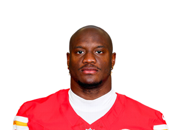
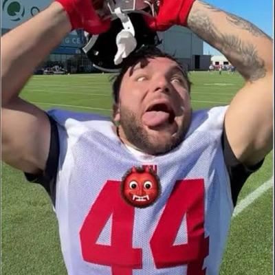
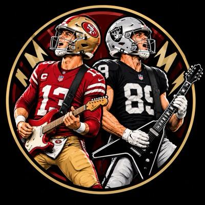
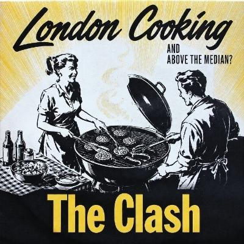

behold the lamb, 11th before the week, beat Bo Girds by 5.34, and that is an upset. Recent add Germie Bernard was the Top Scorer for behold the lamb at 12.07 over projection, a lucky waiver pickup, and without him, that is a loss. Bo Girds starters dropped 7 passes worth about 17.8, and the drops cost the game. Recent add Indianapolis Colts, a margin driver, returned -0.85 for Bo Girds on a free agent add. Bo Girds has now lost 2 straight and sits 3rd. behold the lamb is 6-6 and 0 games at the cut, which is as close to the playoffs as a lamb gets.
Game Changer goes to Germie Bernard, a recent add who scored 20.2 for behold the lamb on a projection of 8.13. Without Bernard, that is a loss, and he was a decider in a game behold the lamb won by 5.34. It was an upset: behold the lamb sat 11th before the week, and Bo Girds sat 2nd. Call the week 5 waiver claim lucky, though he has now beaten projection in 3 of the last 3 weeks. Bo Girds also had its starters drop 7 passes worth about 17.8, and the drops cost the game.
Game Changer goes to Germie Bernard, a recent add for behold the lamb who scored 20.2 on a 8.13 projection. Top Scorer Trevor Lawrence put up 28.34 for Amon-Ra Dawg Your Team, which still lost by 9.51. London Cooking left the MVB on the bench, Jayden Daniels with 21, and won anyway. The Underperformer is Bijan Robinson, who gave To Infinity and Bijan 6.3 points, 16.78 under projection.
- 1Trevor Lawrence JAXAmon-Ra Dawg Your Team28.34
- 2Tyler Shough NOBo Girds26.96
- 3Drake Maye NEMaye d'force B with U23.8
- 1

Kenneth Walker KCBo Girds26.9 - 2Christian McCaffrey SFLil Fridge26.2
- 3James Cook BUFLondon Cooking22.8
- 1Tre Tucker LVAll You Need Is Love24.2
- 2
 Malik Nabers NYGReturn of T Mac22.5
Malik Nabers NYGReturn of T Mac22.5 - 3Germie Bernard PITbehold the lamb20.2
- 1Isaiah Likely NYGMaye d'force B with U20.9
- 2Colston Loveland CHIAll You Need Is Love15.5
- 3George Kittle SFLondon Cooking15.4
- 1Pittsburgh Steelers PITReturn of T Mac15.35
- 2Kansas City Chiefs KCPukancun on 314.15
- 3Denver Broncos DENLil Fridge13.35
Maye d'force B with U got its namesake into the QB position leaders at 23.8, and Isaiah Likely topped every started TE at 20.9. Bo Girds owns the RB position leader in Kenneth Walker at 26.9, plus Tyler Shough sitting right behind Trevor Lawrence among QBs. London Cooking got James Cook in at 3rd among RBs, which is the minimum a team named London Cooking can ask of a Cook. Tre Tucker led all started WRs at 24.2 for All You Need Is Love, which, it turns out, also needed Tre Tucker.
- Jacory Croskey-Merritt8.3 ppg
- David Montgomery8.4 ppg
- Omarion Hampton9.4 ppg
- Tony Pollard7.9 ppg
Pukancun on 3 was 1-9 before the trade, so a move earns some credit, just not this move. It gave Omarion Hampton, who had the highest points per game in the deal at 9.4, plus Tony Pollard and his flat 50 percent snap share. Back came David Montgomery, whose target share fell to 0 percent, and Jacory Croskey-Merritt, whose snap share fell to 40 percent. Amon-Ra Dawg Your Team, at 4-6, collected that top points-per-game back and a Pollard with 17 red-zone carries, which is a fair B for a middling team. This week Pukancun on 3 left both new backs on the bench, and the pair it gave away outscored them by 13.5, above the margin in its matchup.

To Infinity and BijanD- Kenyon Sadiq6.4 ppg
- Dalton Kincaid8.3 ppg
To Infinity and Bijan sat at 4-6 and 10th before the trade, and chose that moment to send away the higher-ranked tight end. Kenyon Sadiq arrived at 6.4 points per game with his snap share down to 34 percent, which earns To Infinity and Bijan a D. Amon-Ra Dawg Your Team earns a B for Dalton Kincaid, who held a position rank by season points of 12, even with his target share down to 8 percent. Kincaid had also missed projection in each of the last 3 weeks, so the B comes with an asterisk. This week Kincaid scored 7.3 for Amon-Ra Dawg Your Team, while Sadiq scored 1.7 on the bench for To Infinity and Bijan.
- Cam Skattebo8.7 ppg
- Nico Collins17.7 ppg
- Ladd McConkey7.6 ppg
- Rhamondre Stevenson10.7 ppg
Pukancun on 3 was 1-9 and last before the trade, so landing Nico Collins at 17.7 points per game is the rare good move out of the basement. Swapping Rhamondre Stevenson for Cam Skattebo gives a little back at running back, as Skattebo had missed projection in 3 of the last 3 weeks. To Infinity and Bijan, sitting at 4-6, handed over Nico Collins for Ladd McConkey, whose target share had fallen to 11 percent. Rhamondre Stevenson, 18th among running backs by season points and trending up, is the consolation prize, which is not the same thing as a plan. In the week of the trade, Ladd McConkey scored 2.2 for To Infinity and Bijan and Cam Skattebo scored 0 for Pukancun on 3, a first week that flattered no one.
- Lamar Jackson20 ppg
- Patrick Mahomes21.4 ppg
- Brian Robinson9.7 ppg
Bo Girds, 7-3 before the trade, sent Patrick Mahomes and Brian Robinson to To Infinity and Bijan for Lamar Jackson. It is a contender's upside bet on a quarterback listed Out in week 5, with 4 RB still on hand to absorb losing Robinson, and it lands the more valuable piece, so a B. To Infinity and Bijan, 10th before the trade, got the quarterback with more points per game in Mahomes at 21.4, but it gave up the more valuable piece, so a C. The sweetener, Robinson, arrives with a 31 percent snap share, which is depth in the most technical sense. This week the trade decided Bo Girds' matchup: Jackson sat on the bench for 0 while Mahomes put up 11.48 for the other side.
 Unsolicited Dak PicksD
Unsolicited Dak PicksD- Devaughn Vele9.9 ppg
- Josh Jacobs
- Bhayshul Tuten11.8 ppg
- Garrett Wilson14.2 ppg
Unsolicited Dak Picks, 4-6 and 7th, sent Garrett Wilson and Bhayshul Tuten to Amon-Ra Dawg Your Team for Devaughn Vele and a Josh Jacobs with no scored game before the trade. Wilson arrived at position rank 7 by season points with a target share up to 34 percent, which is a lot to hand over for Vele. Tuten also leaves with a rising snap share and 12 red-zone carries, and the return is a bet on Jacobs from a roster already holding 6 RB. Amon-Ra Dawg Your Team, 4-6 and 8th, gets the top half of this deal by turning Vele and a Jacobs with no scored game into Wilson and Tuten. This week Tuten scored 22.7 for Amon-Ra Dawg Your Team, while Jacobs scored 0 on the bench for Unsolicited Dak Picks.
- Braelon Allen8 ppg
- Malik Nabers11.9 ppg
- Jared Goff22.8 ppg
- Breece Hall12.5 ppg
- Marvin Harrison4.3 ppg
- Brian Robinson9.7 ppg
- Bijan Robinson22 ppg
To Infinity and Bijan traded away Bijan Robinson, which leaves the team name doing a lot of unsupported work. Sitting 10th, To Infinity and Bijan earns credit for making a move, and Malik Nabers arrives with a target share of 33 percent and rising. Jared Goff adds a quarterback at position rank 3, while Breece Hall brings upside and an injury history that includes an Out in week 5, so To Infinity and Bijan gets a B. Return of T Mac consolidated into Bijan Robinson, position rank 2 with 20 red-zone carries, which earns a B even with Marvin Harrison's flat target share stapled to the package. As for the payoff, Jared Goff scored 0 this week on the bench for To Infinity and Bijan, which is one way to protect an asset.

Lil Fridge won by 38.48, which is more than both Brocks on Brock ‘N’ Roll scored put together. Recent add Denver Broncos put up 13.35 for Lil Fridge, while Brock ‘N’ Roll's recent adds, Tampa Bay Buccaneers and Dallas Goedert, each finished below that. Brock ‘N’ Roll, 6-6 and sitting right on the cut, now has Davante Adams and Mike Evans listed Out, while Lil Fridge's Romeo Doubs is now listed IR.
In an upset, Return of T Mac beat Unsolicited Dak Picks by 38.82, with recent add Carnell Tate chipping in 16. Unsolicited Dak Picks got 13.02 from Dak himself, a fitting contribution to a season low of 81.47. A.J. Brown put up 3.2 and is now listed Questionable, while Unsolicited Dak Picks sit 2 games below the cut.
Maye d'force B with U beat Amon-Ra Dawg Your Team by 9.51, and Isaiah Likely was a decider at 9.84 over projection. The week 6 trade shopping spree brought Amon-Ra Dawg Your Team recent add Garrett Wilson, who scored 6.4, and recent add Dalton Kincaid, who is now listed Questionable. Amon-Ra Dawg Your Team is 4-8 and 2 games below the cut, while across the field Jaylen Waddle is now listed Questionable.
This is the Matchup of the Week. Read the full story at the top. Go to the top story

London Cooking 112.48To Infinity and Bijan lost to London Cooking by 66.4, and Bijan scored 6.3, which is one way to honor the team name. The manager traded for recent adds Patrick Mahomes, Rhamondre Stevenson, Harold Fannin and Terry McLaurin, picked up the Carolina Panthers for good measure, and the Top Scorer of the whole operation was Mahomes at 11.48. Recent add Ladd McConkey scored 2.2 and is now listed Out with a concussion, next to McLaurin, now listed Out with a knee, so the trades are going great.
Tre Tucker decided this one, clearing his projection by 16.62 in a game All You Need Is Love won by 12.95; without Tre Tucker, that is a loss. Pukancun on 3 traded for recent add Cam Skattebo and got 0 from him, which tracks for a 1-11 team. Puka Nacua finished 8.36 under projection for Pukancun on 3, so the team name is now more of a wish.
Dashed line: median 106.83.
To Infinity and Bijan posted 46.08, a season low, and finished 60.75 under the median. At 4-8 and 11th, this was not the week to find a new floor. Unsolicited Dak Picks also set a season low at 81.47, so the picks remain unsolicited and the points remain absent. Bo Girds got over the median by 2.79, the same gap Amon-Ra Dawg Your Team came up short by.
Unsolicited Dak Picks4-8594.91Records include the weekly median game: every team plays its opponent and the league median each week.
Unsolicited Dak Picks4-8Must Watch is Lil Fridge at 10-2 against Return of T Mac, which has won 3 straight and now draws the toughest next opponent win rate in the league. Below the cut, Pukancun on 3 at 1-11 meets To Infinity and Bijan at 4-8, a showdown of the awful in which To Infinity and Bijan gets the softest next opponent win rate in the league.